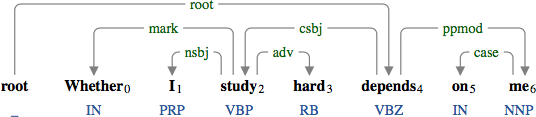
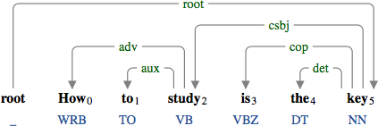
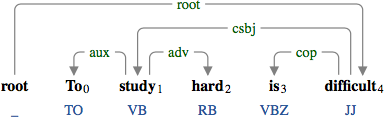
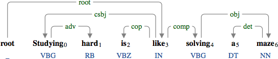
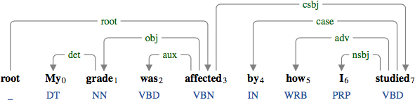
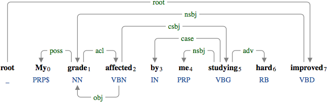
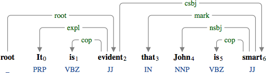

A clausal subject (csbj) is a clause in the subject position.

The clausal subject "whether I study hard" modifying the verbal predicate "depends".
The clausal subject can modify a non-verbal predicate (see copula for more details).

The clausal subject "how to study" modifying the nominal predicate "key".

The clausal subject "to study hard" modifying the adjectival predicate "difficult".

The clausal subject "studying hard" modifying the prepositional predicate "like".
In a passive construction, the clausal subject comes after the predicate.

The clausal subject "how I studied" in the passive construction.

The clausal subject "me studying hard" in the reduced passive construction.
When used with the expletive (expl), the clausal subject comes after the predicate.

The clausal subject "John is smart" used with the extrapositional "it".